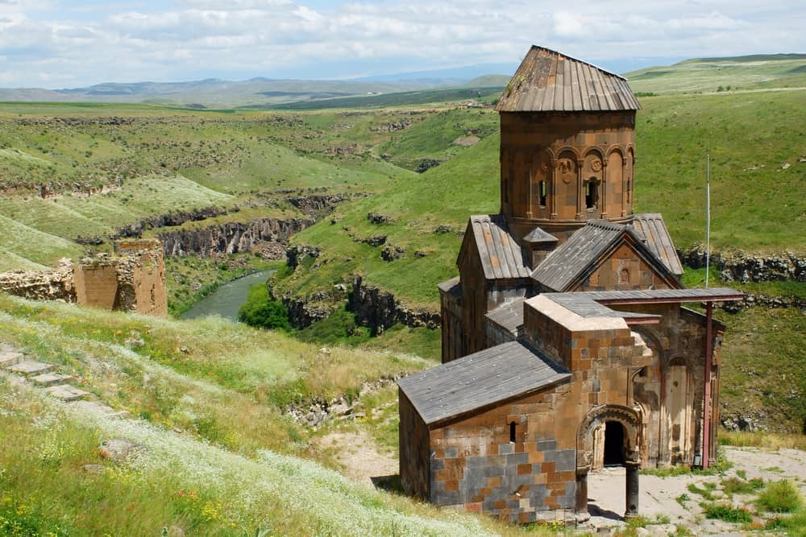
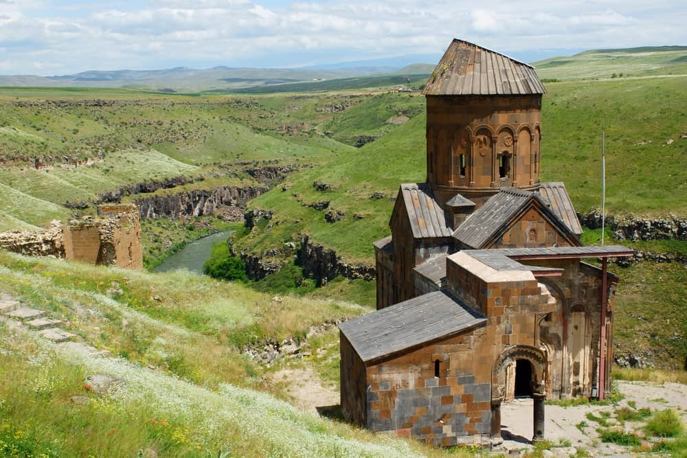

1. Meya (Ağrı)
Meya (Günbuldu) Mağaraları olarak da bilinen Meya Antik Kenti, Ağrı’nın Diyadin ilçesinde bulunuyor.Günbuldu Köyü’ndeki kayaların oyulması ile inşa edilen bu antik şehirde barınma yerleri, tapınak, ibadethane ve mağaralar yer alıyor.Boyutları sekiz ile on metre arasında olan sarp kayalıklardan oluşan bu mağaraların içi yazın serin kışın ise sıcak kalacak şekilde inşa edilmiş. Ayrıca mağaralar içinde hayatta kalabilmek için tandırlar yapılmış.Henüz çok fazla kişi tarafından keşfedilmemiş bir antik kent olan Meya, ilginç mimarisiyle dikkat çekiyor. Hasankeyf ile benzer bir görünüme sahip olan bu güzel kent, en çok fotoğrafçılar tarafından ziyaret ediliyormuş. “Medeniyetler Beşiği” olarak bilinen Ağrı’ya yolunuz düşerse burayı da görmeden geçmeyin.
FOTOĞRAF GALERİSİ2.Harput (Elazığ)
Bir açık hava müzesi gibi olan Harput Antik Kenti, Elazığ’ın kuzeydoğusundaki Harput Mahallesi’nde bulunuyor.2018 yılında UNESCO Kültür Mirası Geçici Listesi’ne kabul edilen Harput’un geçmişi milattan önce 20. yüzyıla kadar uzanıyor.Tabii bu kadar uzun bir tarihi olan kent birçok uygarlığa ev sahipliği yapmış. Bunların arasında Urartular, Medler, Persler, Bizans, Sasaniler, Moğollar, Selçuklular, Safeviler ve Osmanlılar yer alıyor.Elazığ’ın en turistik yerlerinden biri olan Harput Antik Kenti’nde görülecek yerler arasında kale, mağara ve dini yapılar başta geliyor.M. Ö. 8. yüzyılda Urartular tarafından dikdörtgen bir plan üzerine inşa edilen Harput Kalesi iç ve dış kale bölümlerinden oluşuyor.Bazı rivayetlere göre kalenin yapıldığı zamanlarda su kıtlığı yaşandığı için kalenin harcında su yerine süt kullanılmış. Bu sebeple Harput Kalesi “Süt Kalesi” olarak da biliniyor.
FOTOĞRAF GALERİSİ3.Altıntepe (Erzincan)
Erzincan’ın Üzümlü ilçesinde yer alan Altıntepe, Urartular Dönemi’nde kurulmuş bir antik kent.Ova seviyesinden 60 metre yükseklikte bulunan bu tepe, Bizans ve Osmanlı uygarlıklarına da ev sahipliği yapmış.Yapılan ilk dönem kazılarında Urartu Tapınağı, Apadana (Pers mimarisinde sütunlu kabul salonu), açık hava tapınağı, yeraltı taş örgü oda mezarları, Urartu ve Bizans döneminden kalmış sur duvarları bulunmuş. Bu tarihi eserlerin bir kısmı Ankara Anadolu Medeniyetleri Müzesi’nde sergileniyor.Hala devam eden ikinci dönem kazılarında ise Tapınak kısmı onarılmış. Gerçekleştirilen kazılarda şehrin kanalizasyon sisteminin büyük bir kısmı ortaya çıkarılmış.İlk alafranga tuvalet taşının da bulunduğu bu kazılarda, şehrin kanalizasyon sisteminin çok gelişmiş olduğu anlaşılmış.
FOTOĞRAF GALERİSİ 

4.Ani (Kars)
2012 yılında UNESCO Dünya Mirası Geçici Listesi’ne kabul edilen Ani Antik Kenti, 2016’da ise Dünya Mirası Listesi’ne girmiş.UNESCO tarafından tescillenen bu değerli tarihi kent, Kars şehir merkezinden yaklaşık 42 kilometre uzaklıktaki Ocaklı Köyü sınırları içinde bulunuyor.Ani Harabeleri ve Ören Yeri, Türkiye ile Ermenistan arasında doğal bir sınır oluşturan Arpaçay Nehri’nin batısında yer alıyor.Sahip olduğu çok sayıda kilise ve şapel sebebiyle “Binbir Kilise Şehri” veya “Kırk Kapılı Şehir” olarak bilinen Ani’nin ismi tarihi kayıtlarda ilk olarak 6. yüzyılda Ermeni beylerine ait bir yer olarak geçmiş.Ani Katedrali olarak bilinen Meryem Ana Kilisesi ya da Büyük Katedral, şehrin en korunmuş yapılarından biri olarak karşımıza çıkıyor. Bu güzel kilisenin mimarı ise İstanbul’daki Ayasofya Kilisesi’nin kubbesini tamir etmiş olan Mimar Tridat.
FOTOĞRAF GALERİSİ5. Arslantepe Höyüğü (Malatya)
Türkiye’nin en büyük höyüklerinden biri olan Arslantepe Höyüğü, Malatya’nın Battalgazi ilçesinin Orduzu Mahallesi’nde yer alıyor.Otuz metre yüksekliğe sahip olan bu höyükte M. Ö. 5 bin yılından M. S. 11. yüzyıla kadar yerleşim görülmüş.200 x 120 metre boyutlara sahip olan yerleşim alanı M. S. 5-6. yüzyıllarda Roma Köyü olarak, sonrasında ise Bizans Nekropolü olarak kullanılmış.Adeta bir Açık Hava Müzesi niteliğinde olan Arslantepe Höyüğü’nde yapılan kazı çalışmaları sonucunda M. Ö. 3600 – 3500 yıllarından kalma bir tapınak ve M. Ö. 3300 – 3000 yıllarından kalma bir saray bulunmuş.Ayrıca yapılan kazılarda çok sayıda mühür ve ustalık gerektiren madeni eşyalar gün yüzüne çıkarılmış. Anadolu’daki ilk şehir devletinin kalıntılarının ortaya çıkarıldığı Arslantepe Höyüğü 2014 yılında UNESCO Dünya Mirası Geçici Liste’sine girmiş.
FOTOĞRAF GALERİSİ6.Kayalıdere (Muş)
Urartu Kalesi ve Urartu Kaya Mezarı ismiyle de bilinen Kayalıdere Antik Kenti, Muş’un Varto ilçesinin Kayalıdere Köyü’nde bulunuyor.Urartu Kralı II. Sarduri döneminde kurulmuş olduğu düşünülen bu antik şehir, o zamanlarda askeri yerleşim yeri olarak kullanılmış.Bölgede yapılan kazı çalışmaları sayesinde tapınak, kale, içinde şarap küpleri bulunan bir depo ve kaya gömütü ortaya çıkarılmış.Kazılarda bulunan tunç aslan heykeli, aslan tasvirli kemerler, ok başları ve tunç iğneler dikkat çeken tarihi eserler arasında yer alıyor.Çıkarılan eserlerin bir kısmı Ankara Anadolu Medeniyetleri Müzesi’nde sergileniyor.Kayalıdere, Muş
FOTOĞRAF GALERİSİ7.Tuşpa (Van)
Dünyanın hala yaşanılan en eski kentlerinden biri olma özelliğini taşıyan Tuşpa, Van Gölü’nün doğu kıyısında yer alıyor.Urartu Kralı I. Sarduri tarafından kurulan bu şehir M. Ö. 9. yüzyıldan yıkılışına kadar Urartuların başkentliğini yapmış.Tuşpa’daki arkeolojik kazılar Van Kalesi içerisinde gerçekleştirilmiş. Kalenin girişinde Sarduri (Madır) Burcu yer alıyor. Kazı çalışmalarında Kral I. Sarduri tarafından Asur dilinde yazdırılmış çivi yazılı kitabeler bulunmuş.Analı-Kız Açık Hava Mabedi, Bin Merdivenler, Ana Kaya’ya oyulmuş sur duvarları, Urartu krallarından Menua, I. Argişti ve II. Sarduri’nin kaya mezarları kalede görülmesi gereken yerlerin başında geliyor.
FOTOĞRAF GALERİSİ